Write the Docs Salary Survey 2019 Results¶
Introduction¶
The first ever Write the Docs Salary Survey aimed to gather data about salaries for documentarians across the world, to help our community members determine what appropriate salary ranges are and to provide a benchmark for future negotiations.
The survey was open from September 12, 2019 until November 7, 2019. 705 documentarians started the survey and 649 finished it - a completion rate of 92%.
The average time taken to complete all questions was 5 minutes and 10 seconds.
For ease of comparison, respondents were asked to convert their salary figures to US dollars. All numbers in this report are US dollars.
Feedback¶
We’d love your thoughts on this survey, so that we can continue to refine it over the years. You can email us at support@writethedocs.org with your ideas.
Section 1: Employment Parameters¶
This section asked about the parameters of the respondent’s employment - whether they were employees or self-employed, how many hours they worked, whether they worked solo or as part of a team, and how focused their role was on tasks related to documentation.
Basis of Employment¶
The vast majority of respondents were employees (94%) rather than independent contractors, freelance operators, or self-employed (6%).
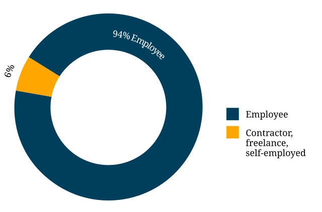
Figure: Basis of Employment¶
Hours Worked¶
Respondents were asked to enter the average number of hours they work per week (whole numbers only).
Most survey respondents worked “full time” hours: 97% worked 30 hours per week or above. 69% of respondents worked between 38 and 42 hours each week - what is traditionally considered a “normal” full time working week.
18% reported worked more than 42 hours per week, with 6% working 50 or above.
4 respondents reported working 60 hours per week, the largest number entered.
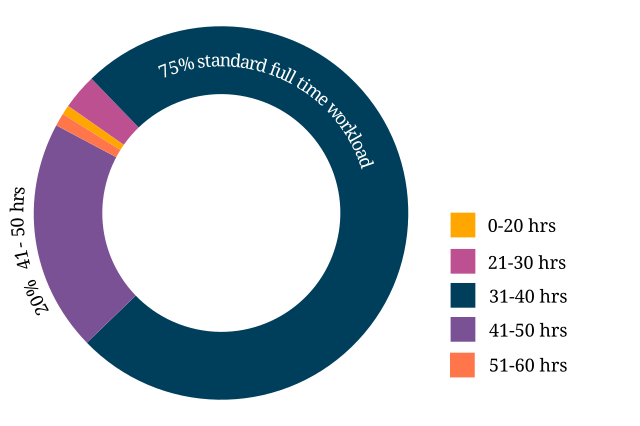
Figure: Hours Worked¶
Job Title¶
Note: 3 respondents entered “N/A” or equivalent
With typos removed, capitalization standardized and abbreviations expanded, 207 distinct job titles were entered as responses to this question.
67% of respondents entered a job title that contained the words “Writer” or “Author”. 62% of respondents entered a job title that contained the words “Technical Writer” or “Technical Author”.
25% of respondents had the word “Senior” in their job title. 8% had “Manager”, and 6% had “Lead”. On the other end of the scale, only 0.5% included the word “Junior”.
By clustering job titles into groups, and separating out the writers, editors, documentation and content craftspeople/specialists/consultants and other roles centered around the creation of documentation - the bulk of the respondents - a few other roles stand out.
| Role Type | Number of Respondents |
|---|---|
| CEOs, Directors and non-specific Managers/Team Leaders | 24 |
| Information Specialists/Analysts/Architects | 21 |
| Engineers or Developers (Data Visualization, Artificial Intelligence, Software) | 17 |
| Support or User Assistance roles | 12 |
| Roles related to Knowledge Management | 11 |
| UX-related roles | 7 |
| Analyst Roles (Business, Systems, Technical) | 6 |
| Roles related to Education and Training | 4 |
| Document Controllers | 2 |
| Instructional Designers | 2 |
| Community Engineer | 1 |
| Developer Advocate | 1 |
| DevOps | 1 |
| Marketing | 1 |
| Quality Assurance | 1 |
Figure: Job Title¶
Type of Role¶
50% of respondents work as part of a team, while 29% work as a solo documentarian. 17% are in manager or team leader roles and the remaining 4% indicated that they had a more unique split role or were part of a team not made up of other documentarians.
Given that team leaders or managers are actually part of a team, and most of the “other” responses indicated partial team roles, this means that overall less than 30% of respondents work individually.
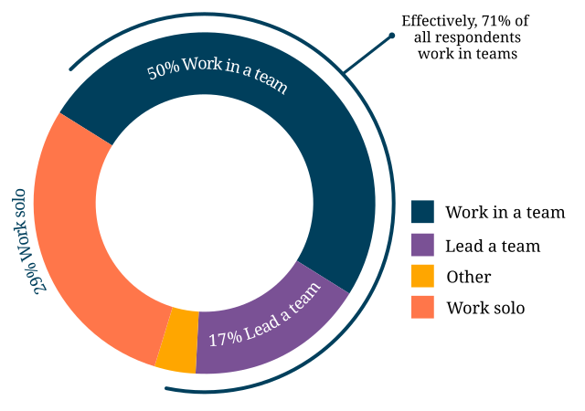
Figure: Type of Role¶
Length of time in current role¶
9% of respondents indicated they had worked in their current role for less than one full year.
20% indicated one year, and a further 8% indicated more than one year but less than 2 years.
2 years but less than 5 years made up 35%. 5 years but less than 10 years was another 19%.
Veterans of 10 or more years in their current role made up 9%. Of these, 9 individual respondents reported 30 years or more, with one respondent reporting 40 years (the top value entered).
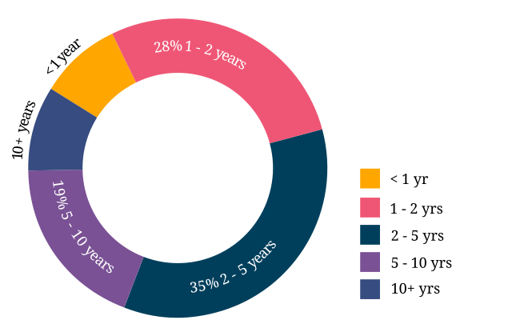
Figure: Time in Current Role¶
Work Location¶
56% of respondents work on site at their employer’s office. 17% work completely remotely, and the remaining 27% work partially remotely and partially onsite.
Of the respondents that work completely on site, 55% do so by choice, while for 45% it’s a requirement.
Of those that work entirely remotely, 74% do so by choice, while only 26% have no on site alternative available to them.
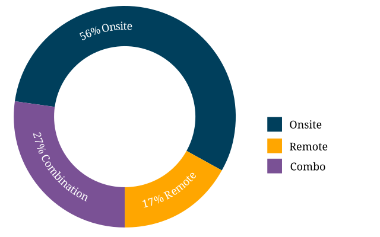
Figure: Work Location¶
Section 2: Salary Information¶
This section contained questions that addressed the all-important salary figure, additional benefits, level of satisfaction and reasons for dissatisfaction.
Annual Salary¶
Note: as 97% (632) of respondents reporting working between 30 and 60 hours per week - a “full time” role - the 3% reporting fewer than 30 hours have been omitted from the figures in this section.
The median salary across all regions, before tax and any additional benefits, was $74,500 (meaning half of the respondents earned more, and half earned less).
This figure is not very representative as it does not take into account the socio-economic situation in the countries of the very highest earners (out of the top 10 salary values, 9 were from the US and one from the UK) and the very lowest (the bottom 10 salary values were from India, Asia, and Eastern Europe).
Figures grouped into regions make a more useful baseline from which to determine what constitutes a “fair” salary.
Median Salary by Region and Country¶
| Region | Sub-region | No of Respondents (working 30+ hours) | Percentage of Total | Median Salary |
|---|---|---|---|---|
| North America | 386 | 61% | $90,000 | |
| USA | 344 | 54.4% | $93,600 | |
| Canada | 42 | 6.6% | $60,273 | |
| Europe | 164 | 25.9% | $48,700 | |
| EU Member States | 112 | 17.2% | $46,104 | |
| UK [1] | 36 | 5.5% | $60,269 | |
| Germany | 24 | 3.7% | $59,430 | |
| Poland | 12 | 1.8% | $21,525 | |
| Russia [2] | 9 | 1.4% | $23,200 | |
| Oceania | 30 | 4.6% | $66,674 | |
| Asia [3] | 13 | 2% | $24,000 | |
| South America | 2 | 0.3% | $36,588 | |
| Israel | 19 | 2.9% | $84,000 | |
| No Country Given | 18 | 2.7% | $84,500 |
Footnotes
| [1] | including Scotland - no respondents were reported from Wales or Northern Ireland |
| [2] | the decision was made to include Russia in Europe due to the percentage of the population living in areas inside the European continent |
| [3] | including South East Asian countries and East Asian countries |
USA¶
The median salary for the entire United States was $93,600 - 25.6% higher than the overall median salary.
Given that the US accounted for such a significant proportion of the data, breaking the data down further, by the most represented states, seems useful as well. Note that 12 of the respondents who indicated that they lived in the USA did not provide a city or state, so those values have been omitted from the following breakdown.
| State | Median Salary |
|---|---|
| Washington | $126,500 |
| California | $120,000 |
| New York | $105,000 |
| Pennsylvania | $96,350 |
| Texas | $92,000 |
| Oregon | $89,000 |
| Virginia | $78,625 |
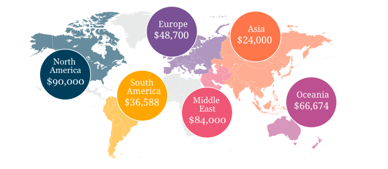
Figure: Median Salary by Region and Country¶
Additional Benefits¶
Health insurance and paid vacation time were the most common benefits reported, with 80% of respondents receiving health insurance and 80% receiving vacation time.
The next most widespread benefits were professional development (including conferences) at 56% and bonus payments at 52%. Childcare (5%) and commission payments (0.6%) were low on the list, and 5% reported that they did not receive any of the listed benefits.
27% of respondents entered additional benefits. The most common included:
| Benefit | Number of Respondents |
|---|---|
| Pension, retirement fund, superannuation or related benefits (including matching) | 54 |
| Stock, stock options, shares or related benefits | 52 |
| Meals, meal vouchers or other food-related benefits | 26 |
| Gym, fitness, sport or other wellness-related benefits | 17 |
| Other types of insurance eg life, accident, income protection etc | 13 |
| Parking, transportation or commuting-related benefits | 21 |
| Time off or bonuses for community-related activities e.g. volunteering | 5 |
| Parental Leave | 5 |
| Unlimited PTO (paid/personal time off) | 3 |
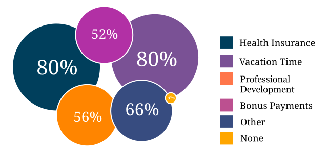
Figure: Additional Benefits¶
Satisfaction¶
71% of respondents are satisfied with their current salary and benefits package - with 26% of those reporting they were very satisfied.
On the other end of the scale, 13.5% are unsatisfied, with 2% of those (14 respondents) rating themselves as very unsatisfied.
In the middle, 15.5% gave a neutral response - neither satisfied nor unsatisfied.
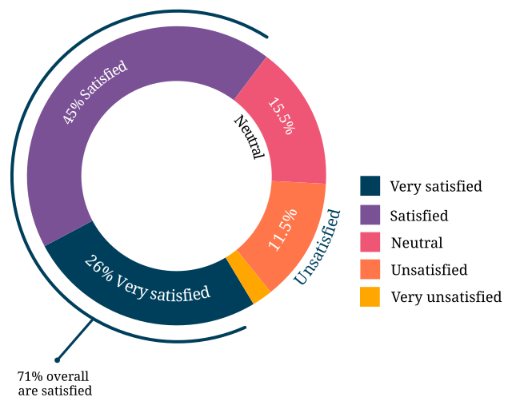
Figure: Satisfaction¶
Reasons for dissatisfaction¶
Note: 56% of respondents did not answer this question. Although the wording suggested that only those who indicated that they were unsatisfied should answer this question, 16 of those that rated themselves as “very satisfied” and 104 of those who rated themselves as “satisfied” (around a third of the total “satisfied” respondents) gave reasons for dissatisfaction - showing that there’s always room for improvement.
The top reasons listed for dissatisfaction were:
| Reason | Percentage of Dissatisfied Respondents |
|---|---|
| salary or rate too low | 47% (20% overall) |
| No opportunities for advancement | 40% |
| Insufficient professional development | 29% |
| Too high workload | 29% |
| Too much stress | 26% |
| Unsupportive workplace | 22% |
| Toolset dissatisfaction | 22% |
| Don’t feel respected | 19% |
| Dissatisfaction with management | 18% |
| Work is uninteresting | 17% |
After the most common reasons for dissatisfaction, the following reasons were identified by smaller numbers of respondents:
| Reason | Percentage of Dissatisfied Respondents |
|---|---|
| No remote opportunities | 12.7% |
| Too many hours | 9.5% |
| Gender discrimination | 6% |
| Lack of remote support | 5.3% |
| Age discrimination | 4.6% |
| Low workload | 3.9% |
| Racial discrimination | 1.8% |
| Education discrimination | 1.4% |
| Too few hours | 0.7% |
38 responses were entered for the “Other” option. After evaluation, some of these responses were merged into the numbers for the areas listed above. The remaining responses were grouped into the following areas:
| Reason | Number of Respondents |
|---|---|
| Missing benefits (pension, parental leave, etc) | 9 |
| Discrepancy between salary and cost of living | 5 |
| Unfair or inconsistent salary across roles | 4 |
| Role undervalued and/or underfunded | 4 |
| Responsibilities exceed pay grade | 4 |
4 of the 14 respondents who rated themselves as “very unsatisfied” did not indicate any reason.
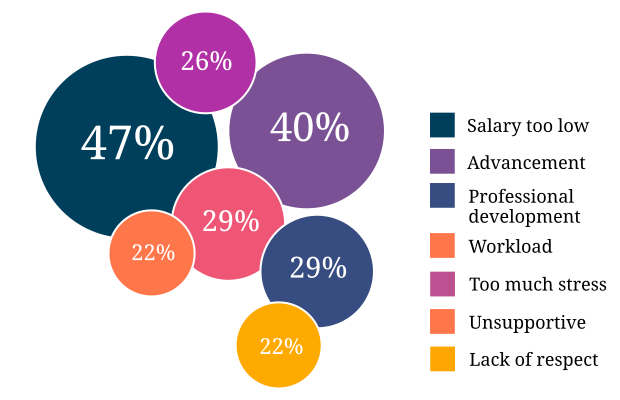
Figure: Reasons for Dissatisfaction¶
Section 3: Organization Demographics¶
Type of Organization¶
Large and medium-sized businesses dominated the results, with 41% of respondents indicating they worked for a medium business and 39.5%, a large business. Small business came in at 3rd place with 14% of the responses.
Government, Non-Profit/Community Organization/NGO and Educational Institutions accounted for less than 2% of the respondents.
10 “Other” responses were entered, covering startups, government contractors and independent units within larger organizations.
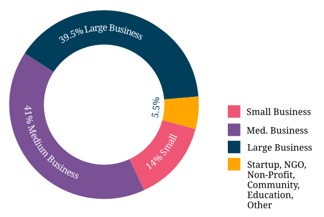
Figure: Type of Organization¶
Section 4: Respondent Demographics¶
Note: The questions in this section were optional.
Age¶
Note: 3 respondents skipped this question
The two largest age groups (26-35 year olds and 36-45 year olds) combined formed 67.5% of the total respondents. Only 4.6% of respondents fell into the youngest age group, and there were no respondents in the 66+ age bracket.
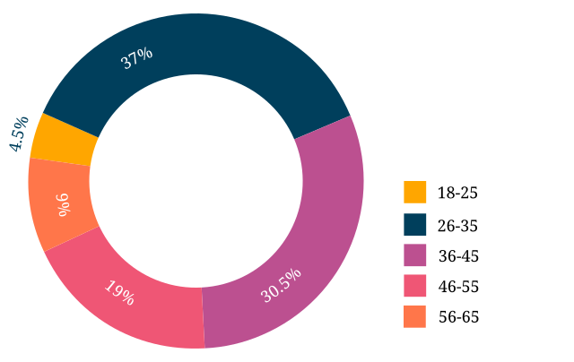
Figure: Age¶
Gender Identity¶
Note: 3 respondents skipped this question, and 1 provided a nonsensical answer which was discarded.
61% of the respondents identified as women, 36% as men, and 3% as non-binary or “other”.
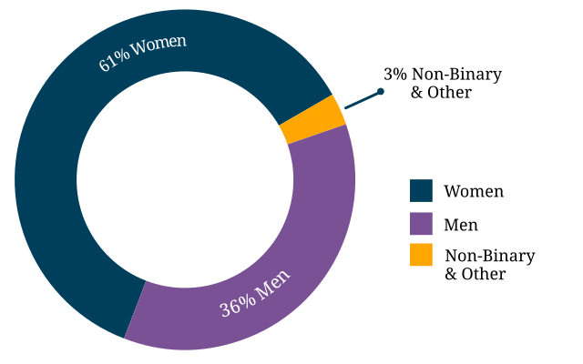
Figure: Gender Identity¶
Highest Education Level Achieved¶
Note: one respondent skipped this question
95% of respondents had completed a college or university degree or higher. Those completing technical college numbered less than 3%, and those who completed high school only (including those who did some college but did not achieve a formal qualification) accounted for the remaining fraction.
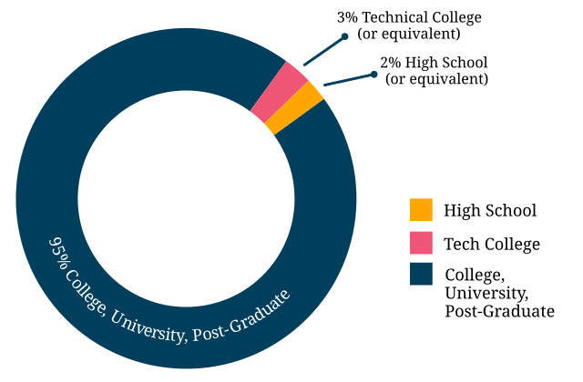
Figure: Highest Education Level Achieved¶
Geographical Location¶
18 respondents left this question blank or provided a non-quantifiable response.
Out of the 594 valid responses:
| Location | Percentage of Respondents |
|---|---|
| United States | 58% |
| Canada | 7% |
| UK | 6% |
| Australia | 4% |
| Germany | 4% |
| Israel | 3% |
| Poland | 2% |
There were fewer than 10 individual respondents from each of the following countries:
- Russia
- France
- Ireland
- The Netherlands
- Spain
- India
- Romania
- Czech Republic
- Hungary
- Denmark
- Finland
- Sweden
- Ukraine
- Bulgaria
- New Zealand
- Portugal
- Belgium
- Croatia
- Estonia
- Italy
- Scotland
- Serbia
- Slovakia
There was one respondent only from each of the following countries:
- Argentina
- Austria
- Brazil
- Greece
- Iceland
- Japan
- Malaysia
- Nepal
- Norway
- Philippines
- Singapore
- Taiwan
- Vietnam
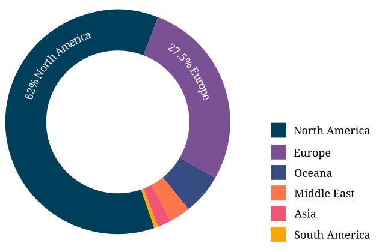
Figure: Geographical Location¶